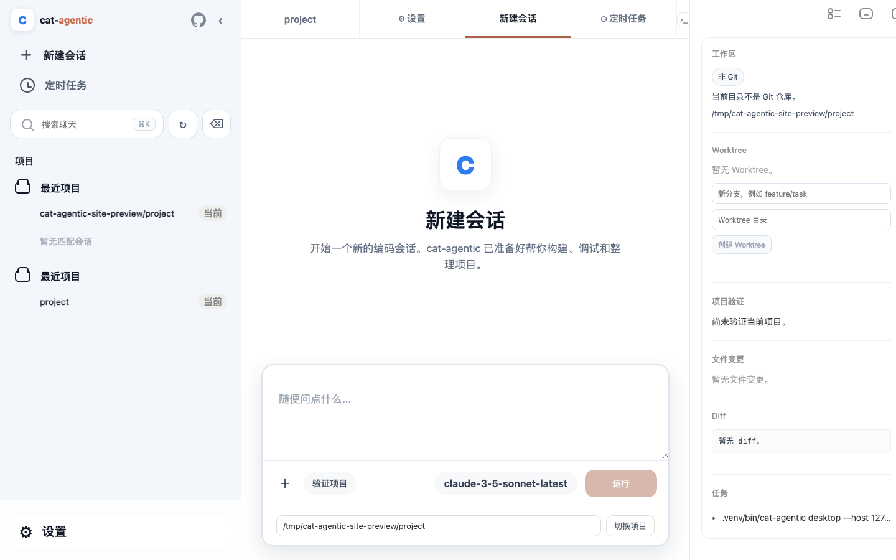

多服务商与 BYOK
配置 Anthropic 与 OpenAI 兼容服务商，密钥保留在环境变量中。
把会话、项目、文件变更、命令审批、Skills 与 MCP 放进一个看得见的桌面工作区，让 AI 真正参与日常开发。

每一项能力都连接真实的本地运行时。页面状态、按钮反馈和文件变更都可以被验证。
配置 Anthropic 与 OpenAI 兼容服务商，密钥保留在环境变量中。
读取、搜索、写入和终端命令都有清楚的状态与人工确认边界。
把本地技能、MCP 服务和角色提示统一放进可浏览的设置中心。
客户不需要先理解 Agent 架构，只需要从自己的项目开始。
验证目录、Git 状态和项目建议，不上传源代码。
模型、工具调用、审批和运行状态都在桌面端可见。
在交付前查看实际变更、测试结果和本机会话记录。
macOS 提供开发预览版；Windows、Linux 和高级用户可以通过 pipx 安装 CLI/TUI。